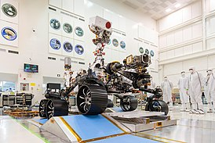
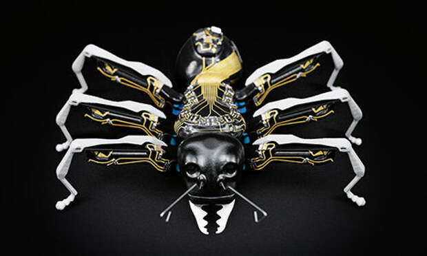

Robots
Are
Interesting
Описание
Интересные факты
Робот Sub1, созданный Джеем Флэтлэндом и Полом Роузом, поставил мировой рекорд по сборке кубика рубика, ему удалось собрать его за всего 0,887 секунды. Среди людей рекорд по скоростной сборке кубика Рубика принадлежит сейчас американскому подростку Лукасу Эттеру, который собрал его за 4,9 секунды
Робот Cue Robot ростом 9,5 дюймов оснащен эмоциональным интеллектом, который позволяет ему развивать личность. Наличие искусственного интеллекта с такими качествами, как смелость, настойчивость, делают робота слегка нагловатым.
Самым быстрым четвероногим роботом является WildCat, созданный компанией Boston Dynamics. Он может развивать скорость до 25,7 км/ч, а также он может резко останавливаться и разворачиваться
Бабочка-робот ChouChou Electric Butterfly внешне выглядит как живая бабочка, и даже движения робота полностью идентичны движениям насекомого. Плюс к этому ChouChou Electric Butterfly можно приобрести, и он будет жить в обычной банке пока не кончится заряд стандартных батареек формата AAA. Для того, что робот пришел в движени достаточно несильно постучать по крышке банки.
Разработчики из Эстонии создали робота-манекена для интернет-магазинов. Его уникальность в том, что он может менять форму тела под заданные параметры. Таким образом, зайдя в интернет-магазин, вы можете указать размеры своего тела, примерить желаемую вещь на манекене и посмотреть, как она сидит, а только потом оформить заказ.
Созданный в Университете западной Англии, робот Ecobot II использует микробиальные топливные генераторы как единственный источник энергии. Как уже говорилось, эти генераторы для вырабатывают электричество из продуктов питания.
Лучшие из лучших

Perseverance
Это марсоход, разработанный для исследования кратера Езеро на Марсе
BionicANT
Фантастический робот-муравей от компании Festo